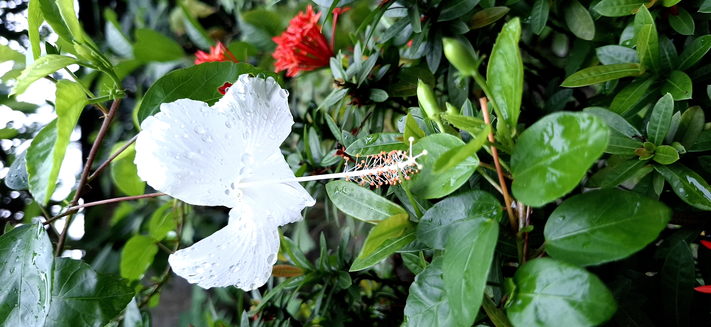
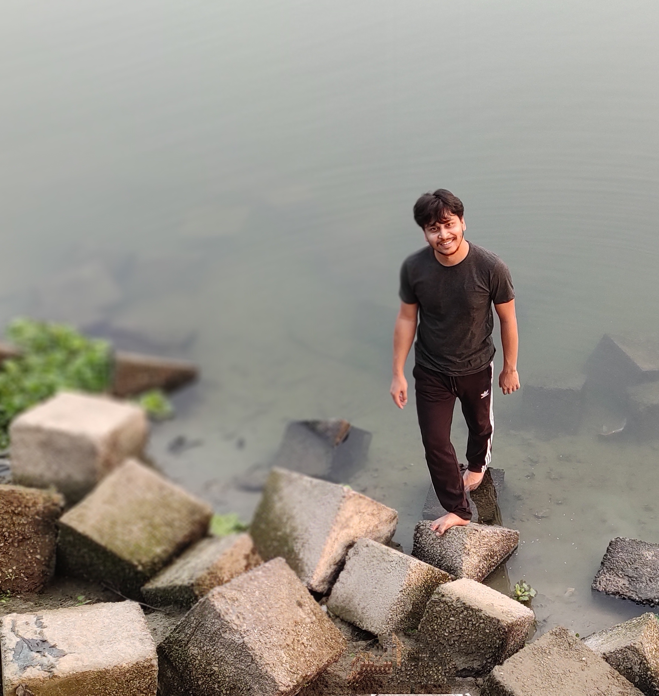
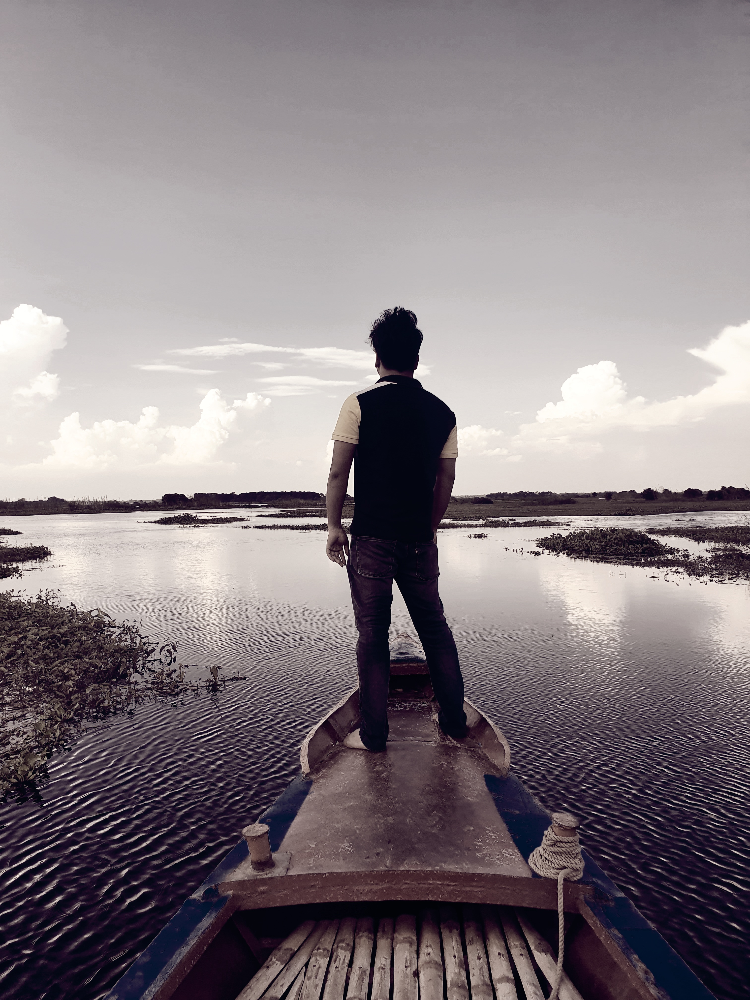

Some people die at 25, burdened by family pressure, career, marriage, life goals, competition, and workload—all together is life. Sometimes people feel alone even when they have everything, unable to share their thoughts or find a shoulder to cry on.
The beauty of life is that at least I have a family and a good circle of friends to embrace me. I am thankful for this life. God is complicated to understand in some situations, yet sharing these moments makes life worthy.
The beauty of life is that at least I have a family and a good circle of friends to embrace me. I am thankful for this life. God is complicated to understand in some situations, yet sharing these moments makes life worthy.

Evening, Before Sunset
A delicate lily captured during a serene evening walk in our community. The golden sunset bathed the petals in warm light, and walking with my best friend, we paused to admire this fleeting beauty.

Evening, City Lights
From our rooftop, the fading sun kissed the lake while city lights sparkled below. Car headlights traced the roads, and the lake mirrored the bustling city life—a moment of quiet awe amidst the urban rhythm.

Morning Walk, 2019
Beside the tranquil Bengali River, source of Tista River, I walked barefoot along the riverside. The morning breeze and gentle ripples of the river left a serene imprint on my heart.
September 2019
Captured at Infosys Mysuru headquarters, a golden chapter of my life. The building, reminiscent of British Parliament architecture, witnessed countless memories and inspiring moments shared with friends.

Boat Trip, Narayanganj
A joyous boat trip with friends, feasting on hilsha fish, mashed potatoes, dal, and more. Laughter echoed across the lake, the moments etched into my heart like gentle ripples on the water.